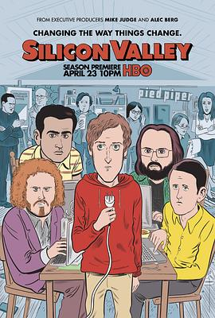
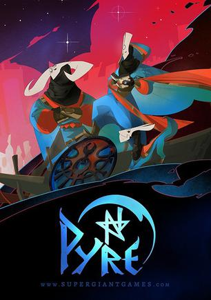

2017年9月
20 条
其中 11 条带正文
广播发布后不可编辑，所以每条都是那一刻的原话。
2017-09-27 15:49:49

2017-09-27 15:49:31
 看过 硅谷 第三季 / Silicon Valley Season 3 ★★★★★
看过 硅谷 第三季 / Silicon Valley Season 3 ★★★★★
戏剧感和启发皆有~
2017-09-26 19:24:14
在看 硅谷 第三季 / Silicon Valley Season 3
2017-09-26 19:23:49
 看过 硅谷 第二季 / Silicon Valley Season 2 ★★★★★
看过 硅谷 第二季 / Silicon Valley Season 2 ★★★★★
赞！燃！
2017-09-25 19:19:22
 看过 王牌特工2：黄金圈 / Kingsman: The Golden Circle ★★★★★
看过 王牌特工2：黄金圈 / Kingsman: The Golden Circle ★★★★★
看完畅快淋漓！这部叫statesman🌚🌚🌚 另外片尾没彩蛋、country road这一部的版本很好听
2017-09-25 11:01:24
2017-09-25 11:00:25

新电影要上映了，躺硬盘里的游戏该拿出来玩玩了
2017-09-25 00:11:26

预购的到现在估计都没玩完1%，时间好少啊，命苦
2017-09-25 00:10:17

在玩，操作有点变态，//没想到2002年做的比04年做的轩辕剑苍之涛都好
2017-09-25 00:08:46

题材很喜欢！但是没时间玩啊，我买的是实体
2017-09-25 00:07:28
在玩 奇异人生：暴风前夕 Life is Strange: Before The Storm
没有max，Chloe竟然也没有max风格的衣服！有点小失望啊，不过游戏还没玩完，不多评论
2017-09-25 00:05:54

街头篮球的远古版，本来预购了，因为这家公司前两部作品都相当给力，但是个人对于体育类游戏实在是没兴趣
2017-09-20 06:57:45

2017-09-18 19:52:39
 看过 小丑回魂 / It ★★★★★
看过 小丑回魂 / It ★★★★★
不恐怖，但是剧情很符合味口～
2017-09-16 20:15:42
想看 移动迷宫3：死亡解药 / Maze Runner: The Death Cure
2017-09-16 20:13:29
 看过 要听神明的话 / 神さまの言うとおり ★★★★☆
看过 要听神明的话 / 神さまの言うとおり ★★★★☆
副标题：中二病也要搞基
2017-09-14 09:41:38

2017-09-14 09:41:05

2017-09-02 17:56:52

2017-09-02 17:26:15